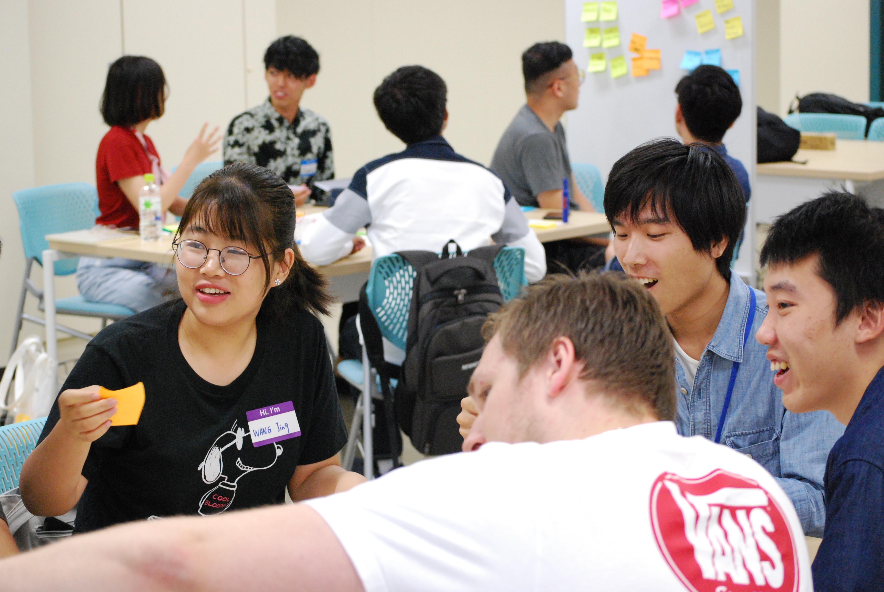

# 活動報告
先端社会デザインコース（FSDコース）で実施された活動を報告します．
# 2019年6月13日 香港バプテスト大学の学生とのミニデザインワークショップ
掲載日時:2019-07-11

2019年6月13日，Study Tourで立命館大学情報理工学部を訪問した香港バプテスト大学 (opens new window)の学生と先端社会デザインコースの学生とで，英語によるミニデザインワークショップを開催しました．
主導は先端社会デザインコースの村上陽平准教授で，参加者数は香港バプテスト大学から11名，立命館大学から15名でした．
ワークショップでは，各自が普段活動している大学をフィールドとして選び，魅力的な講義体験のデザインをテーマにしてブレインストーミングなどをしました．
英語でのワークショップへの参加が初めてという学生も多く，英語での議論に最初は躊躇する様子も見られました．しかし，時間が経つにつれて一生懸命英語でコミュニケーションを図る姿が見られ，短い時間の間でも学生の成長が感じられたワークショップとなりました．